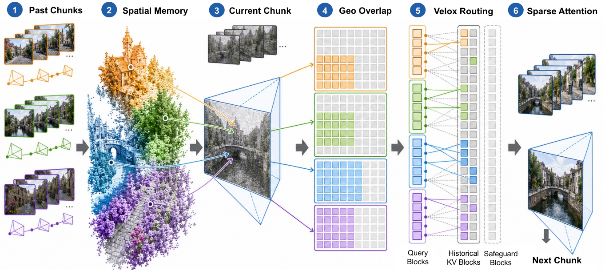

Paper Analysis
01 · Generation Memory and Reconstruction State
分块视频生成器依次生成若干帧组成的 chunk。当前块中的 Query 通过历史 Key/Value 读取已生成内容；历史越长，dense attention 需要访问的 KV 越多。即使缓存避免重算旧特征，读取它们仍有计算和显存带宽成本。
Velox 实验中的生成主干是 LingBot-Fast-Cam，不是 LingBot-Map。后者在这里作为流式几何后端，为已经生成的图像提供深度、位姿和置信度，帮助前者选择历史。最终输出仍是相机控制的视频，不是经过语义改善的三维重建。
作者没有训练新生成器，也没有把历史 KV 全部压成固定个数的向量。它保留历史，但让不同当前区域看到不同的小集合。必须区分三个预算：已存储的历史、为寻找候选而执行的路由计算，以及最终 attention 真正读取的块数。
Paper Analysis
02 · Reading Figure 2 from Left to Right

Qiuhong Shen, Shizun Wang, and Xinchao Wang · CC BY 4.0 · Original figure, unmodified · Paper & Caption ↗
图 2 的 Past Chunks 是已生成图像及相机信息。Spatial Memory 中的点状可视化表示空间对应的概念，实际路由单元是历史 KV block 附带的视锥薄层：来源相机、图像 token 覆盖矩形，以及稳健的近远深度区间。不要把示意点云理解为网络逐点检索的永久稠密地图。
每块包含 128 个 token，按保持时空邻近性的 Gilbert 顺序组织。一个块若跨越帧边界，会拆成多个帧内片段，每个片段分别建立空间支持。这样的粒度能够匹配 GPU attention tile；如果只在稠密结果上乘一个细碎 mask，许多 KV 读写和矩阵运算仍然发生。
Current Chunk 尚在去噪，不能先从它得到可靠重建。作者将已完成帧的深度投影到目标相机，产生 query-depth，再构造当前块的视锥薄层。Geo Overlap 判断当前薄层与历史薄层是否重叠，Velox Routing 将该证据与每层自己的 Q/K 重要性融合。
最后的 Sparse Attention 只对选定历史块计算注意力，并加入邻域等保护块。生成出的新 chunk 解码后又可供几何后端使用。图中是一条“历史生成结果→几何对应→读取路由→下一块生成”的闭环，没有语义教师或语言对齐损失。
Paper Analysis
03 · Geometry Must Be Aligned and Checked
相机控制来自 ViPE，重建位姿来自 LingBot-Map，两者不能直接混用。附录 B.2 用已观察相机中心估计正尺度，再以最近一对匹配位姿建立旋转和位置桥接，使目标相机与历史薄层处于同一坐标系。这是所有空间比较成立的前提。
Multiwarp 保存最近 30 个已重建 chunk 的首尾帧，最多 60 张源深度图。有效深度需大于 0.01，并丢弃有效像素中置信度最低的 20%。源像素反投影到世界，再投到目标 latent 相机；每个目标 token 优先使用至少贡献两个样本的最新源帧。
重点是先选来源，再取该来源的深度中位数，而不是把不同时间、可能属于不同表面的深度直接平均。没有足够样本就保留为空。块内有效 token 的 10% 和 90% 深度分位数定义近远范围，薄层再近似成朝向相机的有向包围盒 OBB。
重叠分数 g 是 query OBB 与某历史块各片段 OBB 的最大 IoU。覆盖率 ρ 则衡量当前块有多少 token 的深度和射线被有效历史薄层支持。g 回答“哪些块可能对应”，ρ 回答“能否信任这次几何路由”；ρ≥0.9 才使用几何修正。
这些检查仍不是正确性保证。过时深度可能填入新暴露区域，薄结构的 OBB 可能过厚，几何漂移也会改变重叠。深度来自生成图像，生成伪影同样会进入这条链路。
Paper Analysis
04 · A Bounded Prior Rather Than a Hard Match
第 ℓ 层对 Query 块 i 和历史块 r 的均值向量计算缩放点积，再在历史块上 softmax，得到 p。它保留该层预训练注意力对上下文的偏好；不同层不必采用同一候选集合。
对可靠覆盖区域，先把 g≤0.1 的重叠视为噪声，再用 g_ref=0.2 归一化并截断到 1。λ=2 时，有几何支持的块在归一化前最多放大三倍。几何不直接替代视觉亲和度，更不意味着 IoU 最大者一定正确。
教学算例：两个块的原始权重分别为 0.20 和 0.40，第一个获得最大几何支持，第二个没有支持。融合前的未归一化分数变成 0.60 和 0.40，因此排序可改变；但若第一个原来只有 0.01，它最多变为 0.03，几何无法无限放大一个模型几乎不支持的候选。
覆盖充分时长历史预算 K_cov=80，否则回到模型自己的累积概率路由，上限 K_unc=150。前一 chunk 的块先在预算内预留；global Gilbert 邻域和可选参考帧块额外加入，因此最终读取块数可能超过 80 或 150。
附录 B.1 将未覆盖分支描述为没有最小路由长度下限，D.4 又提到剩余旧历史选择预算会做 floor。两者作用层级可能不同，公开代码尚待发布，复现时应明确区分总路由下限与扣除前一块后的剩余预算保护。
p_i,r^(l) = softmax_r(mean(Q_i^(l)) · mean(K_r^(l)) / sqrt(d))
g_hat_i,r = 1[g_i,r > 0.1] min(g_i,r / 0.2, 1)
p_tilde_i,r^(l) = p_i,r^(l) (1 + 2 g_hat_i,r)
/ sum_s p_i,s^(l) (1 + 2 g_hat_i,s)
Apply geometric fusion only if coverage rho_i >= 0.9.Paper Analysis
05 · Sparse Computation Still Needs a Systems Design
Velox 不需要训练 loss。融合强度是在两个导航轨迹、共 48 个层/去噪步/序列长度组合上校准的。正重叠块在 top-80 中的召回从 0.602 到 0.852，平均约 9% 的选择变化；这衡量与其几何判据的一致性，不是几何真值精度。
实现使用 Triton indexed block-sparse kernel，并直接按 global Gilbert 顺序存储 KV，使被选块连续读入。Query 每个 chunk 重排一次；不是每次 attention 都在主机端对整个缓存做昂贵置换。
几何重建与薄层构建在同一 H200 的另一个 CUDA stream 上异步执行。通常第 c 个 chunk 使用截至 c−2 的几何，前一 chunk 仍由时间保护路由保留。最早尚无几何状态的 chunk 使用 dense attention。
速度数据是每次 attention 调用与每个 chunk 的去噪关键路径时间。VAE 解码使用侧流，kernel 预热在计时外，最后一个 chunk 无需为未来构建路由。它不等于任意硬件、任意长度上的完整生成墙钟加速；早期 chunk 的 dense 成本低，稀疏处理未必划算。
本次核对了论文附录和作者项目页。项目页仍标记代码即将发布，未进行代码级执行验证；尤其不能把路由上界写成总显存恒定，历史 KV 与部分检索工作仍随序列增长。
| Scope at Chunk 48 | Dense | Velox | Interpretation |
|---|---|---|---|
| Attention call | 34.2 ms | 7.8 ms | 作者报告约 4.36× |
| Chunk denoising | 7.19 s | 2.96 s | 作者报告约 2.43× |
| Stored historical KV | Growing | Growing | 限制读取，不是淘汰全部旧缓存 |
Paper Analysis
06 · Quality Evidence and Its Limits
WBench navigation 共 158 个案例。最可直接比较的是同一 LingBot-Fast-Cam 主干的 dense、model-only block-sparse、Velox 三行；这些结果使用同一 Gemini 评判设置。论文中其他已发表基线使用 Doubao，不能直接把 API 评判项的差别全解释为模型能力差别。
API-free average 排除依赖 API 的项目，Velox 为 73.51，dense 为 73.66，model-only 为 73.11。几何相对模型单独路由增加 0.40 点，但仍比 dense 低 0.15 点。overall average 为 75.60，比 dense 的 75.52 高 0.08；这不是全面质量提升。
细分指标里，Spatial Consistency 从 dense 的 73.0 到 74.3，而 Perspective Consistency 从 81.7 降到 77.0，Subject Consistency 从 87.2 降到 86.4。静态背景的空间关联与对象、视角敏感内容的保真之间可能存在取舍；论文也把这些列为后续检查重点。
论文的 qualitative 示例展示了历史外观保留，但选择的图例不能替代整体统计。没有随机同预算、仅近期窗口、整帧 FOV 检索等完整对照时，还不能断言该几何路由在所有同预算策略中最优。
| Routing | API-free Avg. ↑ | Overall Avg. ↑ | Spatial ↑ | Perspective ↑ |
|---|---|---|---|---|
| Dense | 73.66 | 75.52 | 73.0 | 81.7 |
| Model-only sparse | 73.11 | 75.01 | 71.8 | 75.7 |
| Velox | 73.51 | 75.60 | 74.3 | 77.0 |
Paper Analysis
07 · What Transfers to Semantic Reconstruction Memory
对语义流式重建可借鉴的是“先验证支持，再有限修正”的原则，而不是把 Velox 称为语义重建方法。可以研究语义相似度作为额外弱先验：只在几何和可见性支持的候选内调节读取，语义或几何不可靠时保留原视觉路由。此处是个人设计推论，本文没有验证这一语义版本。
它也提示写入和读取应拆开验证。我们此前的写入前融合研究语义怎样改变留下的历史表示；Velox 研究已有历史怎样被当前区域读取。若同时修改两者，几何改善的来源会难以解释。先固定状态容量比较写入方式，再固定状态内容比较读取方式更清晰。
最后，任何语义模块都应同时记录准确度、完整度、历史读取量、外部存储量和端到端延迟。局部 attention 变快不代表系统整体省内存，视频一致性得分也不能代替深度或位姿误差。
Discussion
Reading Questions
Is Velox a semantic memory method?
不是。它使用重建空间支持与模型 Q/K 重要性，没有密集语言教师或语义 loss。语义路由属于可能的扩展。
Why not keep only the nearest geometric blocks?
几何可能错误，且不同层需要不同信息。软乘子保留层特异的模型偏好，低覆盖时不施加几何偏置。
Does an 80-block route bound total memory?
不。80 是覆盖区域的长历史路由预算，保护块还会额外加入，历史 KV 本身继续保存。
Has it improved LingBot-Map reconstruction?
论文没有证明这一点。LingBot-Map 提供几何，评测目标是 LingBot-Fast-Cam 的生成速度与视频质量。
References
- Original Paper and Appendices ↗
- Official Project and Release Status ↗
- Related Note: LingBot-Map ↗
- Related Note: Semantic Memory Formation ↗
One original method figure is reproduced for focused scholarly commentary. Results are author-reported, not locally reproduced. First-submission dates and reading versions are recorded separately.
Verified on 2026-11-02. Paper results refer to the linked versions. Repository references were checked on this date.